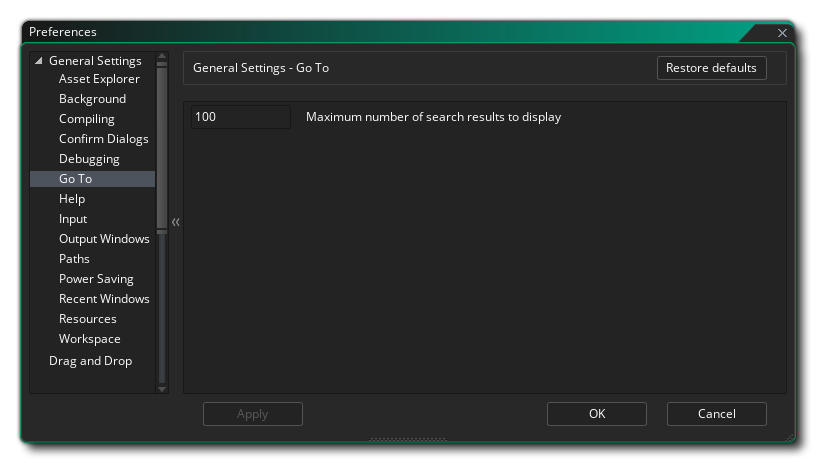
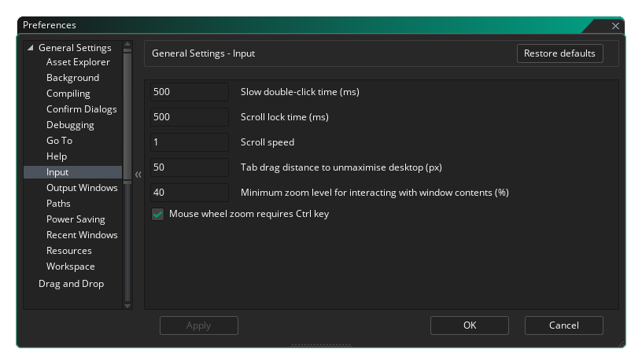

In den Allgemeinen Voreinstellungen wird das allgemeine Verhalten der GameMaker Studio 2 IDE festgelegt. Die allgemeinsten sind auf der Hauptseite aufgeführt, während viele andere in mehrere Unterkategorien unterteilt sind, die weiter unten auf dieser Seite erläutert werden.
- IDE-Sprache: Mit dieser Option können Sie die Sprache für die IDE aus der Liste der bereitgestellten Optionen auswählen. Die Standardeinstellung ist Englisch.
- IDE-Skin: Hier können Sie aus den verschiedenen Skins auswählen, die die IDE verwenden kann. Standardmäßig enthält GameMaker Studio 2 zwei Skins, eine helle und eine dunkle. Bei der Ersteinrichtung wird die dunkle Skin verwendet.
- Standard-Audiogerät: Hier können Sie das Standard-Audiogerät auswählen, das die GameMaker Studio 2 IDE verwenden soll. Sie können die Liste aktualisieren, indem Sie auf die Schaltfläche Aktualisieren klicken

- Automatische Antwort auf Beendigungsbestätigung: Mit dieser Option können Sie festlegen, ob beim Beenden von GameMaker Studio 2 eine Bestätigungsmeldung angezeigt werden soll. Standardmäßig ist dies auf "OK" gesetzt. Sie können die Nachricht jedoch so überspringen, als ob Sie auf OK geklickt hätten.
- Benachrichtigungen aktivieren: Durch Aktivieren dieser Option kann die IDE Benachrichtigungen über neue Laufzeiten usw. anzeigen. Dies ist standardmäßig aktiviert.
- Benachrichtigungs-Timeout (ms): Hier wird die Zeitdauer (in Millisekunden) festgelegt, für die eine Benachrichtigung angezeigt wird. Die Standardeinstellung ist 6000.
- Abmelden beim Beenden: Wenn diese Option aktiviert ist, meldet die IDE die Benutzersitzung automatisch ab, wenn GameMaker Studio 2 geschlossen wird. Dies ist in erster Linie für Education-Benutzer gedacht, da - wenn markiert - dies bedeutet, dass der Benutzer bei jedem Herunterfahren des Programms abgemeldet wird und somit den Sitzungsplatz für andere Benutzer freigeben kann. Dies ist standardmäßig deaktiviert.
- Geänderte Dateien automatisch neu laden: Wenn diese Option aktiviert ist, wird die IDE die Dateien automatisch scannen und prüfen, um zu sehen, ob Dateien außerhalb von GameMaker Studio 2 geändert wurden, und laden sie gegebenenfalls neu.
- Neue Ressourcen zur Bearbeitung beim Erstellen öffnen: Wenn diese Option aktiviert ist, wird bei jedem Erstellen einer neuen Ressource im Ressourcenbaum der entsprechende Ressourcen-Editor automatisch geöffnet. Dies ist standardmäßig aktiviert. Wenn Sie das Kontrollkästchen deaktivieren, müssen Sie alle neu erstellten Ressourcen manuell öffnen.
- Öffnen Sie neue Ressourcen zum Bearbeiten, indem Sie Dateien in die IDE ziehen: Bestimmte Ressourcen (wie Sprites oder Sounds) können in den GameMaker Studio 2 IDE-Arbeitsbereich gezogen werden und werden erkannt und als neue Ressource in der Ressourcenstruktur hinzugefügt. Standardmäßig wird auch der entsprechende Ressourcen-Editor zur Bearbeitung geöffnet. Wenn Sie diese Option jedoch deaktivieren, können die Editoren nicht geöffnet werden, und Sie müssen sie manuell öffnen.
- Leere Tabs per Shortcut schließen lassen: Sie können alle geöffneten Tabs über die Tastenkombination schließen
 /
/  + W, aber wenn Sie diese Option deaktivieren, funktioniert diese Verknüpfung nicht mehr. Dies ist standardmäßig aktiviert.
+ W, aber wenn Sie diese Option deaktivieren, funktioniert diese Verknüpfung nicht mehr. Dies ist standardmäßig aktiviert. - Deaktivieren von IDE-Übergangsanimationen: Die GameMaker Studio 2- IDE verfügt über eine Reihe von animierten Übergängen für das Öffnen von Fenstern usw. Sie sind jedoch nicht für jeden Geschmack etwas, und Sie können einen Leistungsschub erleiden, wenn sie auf älteren oder unterversorgten Computern deaktiviert sind Sind deaktiviert. Sie können sie hier deaktivieren und sind standardmäßig aktiviert.
- Begrüßungsbildschirm beim Start anzeigen: Diese Option ist standardmäßig aktiviert und weist GameMaker Studio 2 einfach an, beim Starten des Programms einen kurzen Begrüßungsbildschirm anzuzeigen. Wenn Sie diese Option deaktivieren, wird der Startbildschirm nicht angezeigt.
- DPI- Überschreibung aktivieren: Mit dieser Option können Sie die standardmäßige DPI-Einstellung mit Ihrer eigenen überschreiben. Sie müssen zuerst die Option aktivieren und dann entweder den Raw-DPi-Überschreibungswert (Standardwert ist 96) oder den Prozentsatz des nativen DPi festlegen. Sobald Sie die Änderung vorgenommen haben, werden Sie aufgefordert, die IDE neu zu starten, wodurch möglicherweise alle gespeichert werden müssen Arbeit an dem aktuell geöffneten Projekt.
- An Feedback-Umfragen teilnehmen: Wenn diese Option aktiviert ist, teilen Sie GameMaker Studio 2 dass Sie an Feedback-Umfragen teilnehmen möchten. Dies bedeutet, dass gelegentlich während der Arbeit eine Nachricht über den Bereich, in dem Sie arbeiten, angezeigt wird, und eine Bewertung und angefordert wird Feedback. Diese Option ist standardmäßig aktiviert.
Die oben genannten Optionen sind die Hauptoptionen, die in den allgemeinen Voreinstellungen verfügbar sind. In den unten aufgeführten Unterkategorien stehen Ihnen jedoch eine Reihe zusätzlicher Optionen zur Verfügung:
Wenn Sie einem Objekt ein Sprite hinzufügen oder eine Schriftart in Drag & Drop oder in einer Reihe von Situationen verwenden möchten, wird der Asset-Explorer angezeigt:
Standardmäßig wird eine Baumansicht (links) und eine Listenansicht (rechts) angezeigt. Wenn Sie diese Einstellung verwenden, können Sie auswählen, dass nur die eine oder die andere angezeigt wird.
Die Hintergrundeinstellungen betreffen den Hintergrund des Arbeitsbereichs und dessen Anzeige sowie die Art und Weise, wie er angezeigt wird. Die Optionen sind:
- Hintergrundbild: Dies ist die Bilddatei, die als Hintergrund für die verschiedenen Arbeitsbereiche verwendet wird. Es wird ein Standardbild bereitgestellt und ist standardmäßig aktiviert. Sie können hier jedoch Ihr eigenes Bild auswählen. Die Bildtypen, aus denen Sie auswählen können, sind *.png. *.gif. *.jpg. *.jpeg. *.tif. *.tiff. *.ico. *.bmp. *.2bp oder *.mdi Beachten Sie jedoch, dass unabhängig vom ursprünglichen Bildformat alle Dateien zur Verwendung als gespeichert werden *.png Dateien, so animiert *.gif Dateien zum Beispiel werden nur als ein einziges Anfangsbild gerendert.
- Bildskalierung: Hier wird gesteuert, wie das Hintergrundbild in den verschiedenen Arbeitsbereichen skaliert wird. Die Wahlmöglichkeiten sind:
- Dehnen - Das Bild wird an den Arbeitsbereich angepasst, wobei die Skalierung abhängig von den sichtbaren Docks geändert wird
- Kacheln - Das Bild wird gekachelt, um den Arbeitsbereich abzudecken
- Optimale Anpassung - Das Bild wird proportional an den Arbeitsbereich angepasst, wobei am Rand Balken eingefügt werden, wenn es sich nicht um eine 1: 1-Anpassung handelt
- Desktop Stretch - Der Hintergrund deckt den gesamten Arbeitsbereich ab und ändert sich nicht beim Ändern der Skalierung, wenn Docks geöffnet oder geschlossen werden
- Bildschirmstreckung - Der Hintergrund deckt einen Bereich in der Größe des Fensters ab und wird beschnitten / erweitert, um mehr oder weniger des Bildes anzuzeigen, wenn Docks geöffnet / geschlossen werden.
- Hintergrundbilder in Arbeitsbereichen anzeigen: Diese Option steuert, ob das ausgewählte Hintergrundbild angezeigt werden soll oder nicht. Standardmäßig ist dies als aktiviert.
Die Kompiliervoreinstellungen behandeln bestimmte Optionen, die sich auf die Ausgabe beziehen, wenn Sie Ihr Spiel zum Testen oder Erstellen eines Pakets sowie bestimmte Bereiche des Kompilierungsprozesses kompilieren. Die Optionen sind:
- Syntaxfehlerfenster bei Erkennung automatisch öffnen: Syntaxfehlerbenachrichtigung beim Kompilieren aktivieren oder deaktivieren. Dies ist standardmäßig deaktiviert.
- Kompilierfenster während des Kompilierens anzeigen: Standardmäßig wird das Kompilierfenster beim Kompilieren Ihrer Projekte angezeigt, auch wenn das Kompilierungsdokument geschlossen ist (es wird für das Kompilieren geöffnet). Wenn Sie diese Option deaktivieren, wird dieses Verhalten deaktiviert, und das Kompilierfenster ist sichtbar, wenn es geöffnet ist.
- Compiler-Befehle in der Compile-Ausgabe anzeigen: Dies ist standardmäßig aktiviert und zwingt den Compiler, alle relevanten Befehle im Compile-Fenster anzuzeigen. Wenn Sie dies deaktivieren, wird die Ausgabe kleiner und es werden weniger Informationen angezeigt.
- Ausführliche Compiler-Ausgabe anzeigen: Wenn Sie diese Option aktivieren, wird der Compiler gezwungen, zusätzliche Befehle anzuzeigen, die sich auf den Kompilierungsprozess beziehen. Im Allgemeinen ist dies nur beim Debugging erforderlich und kann vom Support angefordert werden, falls Sie ein Problem haben. Sie ist standardmäßig deaktiviert (und dies ist die empfohlene Einstellung).
- Paket im Explorer nach Abschluss des Builds GameMaker Studio 2: Wenn Sie diese GameMaker Studio 2 öffnet GameMaker Studio 2 das Fenster des Betriebssystem-Explorers an der Stelle, an der das endgültige ausführbare Paket erstellt wurde. Es ist standardmäßig aktiviert.
- Ausgabefenster beim Kompilierungsstart löschen: Standardmäßig löscht das Compilerfenster alle vorherigen Meldungen aus dem Kompilierungsausgabefenster zu Beginn jedes Builds. Wenn Sie diese Option jedoch deaktivieren, werden die vorherigen Compilerprotokolle beibehalten. Dies ist standardmäßig aktiviert und wird empfohlen, da große Compilerprotokolle die Kompilierungszeiten verlangsamen können.
- Debugger-Port: Hiermit wird die Portnummer festgelegt, die das Debug-Modul verwenden soll. Der Standardwert ist 6509.
- Maximale parallele Kompilierungsaufträge: Dieser Wert legt die maximale Anzahl von CPU-Kernen fest, die für das Kompilieren eines Projekts vorgesehen sind. Der Standardwert ist 8, und im Allgemeinen sollten Sie dies nicht ändern müssen. Wenn Sie sich jedoch auf einem Laptop oder einem Computer mit einem niedrigeren Gerät befinden, sollten Sie diesen Wert verringern. Der Standardwert ist 8.
In den Voreinstellungen zum Bestätigen des Dialogs werden einige allgemeine Bestätigungs-Popups behandelt, die beim Ausführen bestimmter Aktionen in der GameMaker Studio 2 IDE angezeigt werden. Die Optionen sind:
- Automatische Reaktion auf das Schließen eines Arbeitsbereichs über die Tastenkombination: Mit der oben genannten Tastenkombination können Sie alle geöffneten Tabs schließen. Manchmal schließen Sie jedoch versehentlich einen leeren Tab, den Sie benötigen. Um dies zu verhindern, können Sie diese Option auf "Nachricht anzeigen" (Standardeinstellung) setzen, um zu fragen, ob Sie diese leere Registerkarte wirklich schließen möchten. Die anderen Einstellungen sind "Nein", um einfach nichts zu tun, wenn die Verknüpfung verwendet wird, oder "OK", um die Registerkarte ohne Nachricht zu schließen.
- Automatische Antwort auf den Neustart eines laufenden Builds: Wenn Sie einen Build neu starten und ein anderer vorher noch ausgeführt wird, werden Sie gefragt, ob Sie den aktuellen Build zuerst stoppen möchten. Wenn Sie diese Nachricht nicht markieren, wird diese Nachricht unterdrückt und GameMaker Studio 2 davon ausgehen, dass Sie als Antwort auf "OK" geklickt haben. Diese Option ist standardmäßig auf "Nachricht anzeigen" eingestellt.
- Automatische Reaktion auf Warnung beim Debuggen von YYC: Das YYC-Ziel wird in nativen Code kompiliert und kann daher nicht mit dem integrierten Debugger debuggt werden. Wenn Sie versuchen, den Debugger für das YYC-Ziel zu verwenden, erhalten Sie eine Warnung, die Sie darüber informiert, und die Tatsache, dass das Projekt stattdessen mit der VM kompiliert wird. Diese Option ist standardmäßig auf "Nachricht anzeigen" eingestellt. Wenn Sie jedoch "OK" wählen, wird diese Warnung unterdrückt.
- Automatische Reaktion auf das Zurücksetzen des Projektlayouts: Wenn Sie das Projektlayout zurücksetzen (im Menü Layouts ) auswählen, wird standardmäßig eine Warnmeldung darüber angezeigt, wie geöffnete Ressourcenfenster geschlossen werden. Sie können diese Meldung jedoch unterdrücken und das Layout durch Auswahl von "OK" automatisch zurücksetzen oder durch Auswahl von "Nein" nichts tun lassen. Der Standardwert ist "Show Message".
- Automatische Antwort zum Deaktivieren anonymer Statistiken: Wenn Sie anonyme Spielstatistiken in den allgemeinen Spieloptionen deaktivieren, wird eine Warnmeldung angezeigt, in der Sie aufgefordert werden, die Option sorgfältig zu prüfen. Sie können diese Meldung unterdrücken, indem Sie hier "OK" auswählen oder nichts tun, indem Sie "Nein" auswählen. Der Standardwert ist "Show Message".
Die Einstellungen hier beziehen sich auf den GameMaker Studio 2 Debugger und Sie haben folgende Optionen:
- Automatische Antwort auf das Schließen des Debuggers: Mit dieser Option können Sie die automatische Antwort beim Schließen des Debuggers einstellen. Wenn "Nachricht anzeigen" eingestellt ist, wird der Dialog angezeigt, wenn Sie den Debugger schließen möchten. Wenn Sie ihn auf "Ja" oder "Nein" setzen, wird dieser Dialog nicht angezeigt und die angegebene Aufgabe wird ausgeführt.
- Echtzeit-Debugging aktivieren: Wenn Sie diese Option aktivieren, können Sie Ihre Spielprojekte in Echtzeit debuggen, wenn Sie sie über die IDE ausführen. Dies ist standardmäßig aktiviert.
Die Voreinstellungen hier sind für das Fenster Gehe zu, das Sie mit der Tastenkombination öffnen können
- Maximale Anzahl anzuzeigender Suchergebnisse: Diese Option steuert die maximale Anzahl der zurückgegebenen Ergebnisse, wenn Sie das Fenster "Gehe zu" verwenden.
Die Hilfedatei funktioniert wie eine Webseite und erfordert daher die Verwendung des GameMaker Studio 2 micro-Webservers oder die Verwendung eines externen Browsers. Diese Einstellungen können hier geändert werden:
- Hilfe-Handbuch-Port: Hier wird die Port-Nummer festgelegt, die der manuelle Micro-Webserver verwenden soll. Der Standardwert ist 51291.
- Verwenden Sie einen externen Browser für Hilfe: Wenn diese Option aktiviert ist, wird beim Öffnen der Hilfedatei diese mit dem Standardbrowser für Ihr System geöffnet. Diese Option ist standardmäßig aktiviert. Wenn Sie sie deaktivieren, wird die Hilfedatei im Arbeitsbereich der IDE geöffnet.
Die Eingabeeinstellungen steuern bestimmte Aspekte der Maus- und Tastatureingaben in der IDE. Die verfügbaren Optionen sind:
- Langsame Doppelklickzeit (ms): Für einige Bereiche der IDE ist ein langsamer Doppelklick erforderlich, um korrekt zu funktionieren, z. B. beim Umbenennen einer Ressource (ein schneller Doppelklick öffnet den Ressourceneditor, während ein langsamer Doppelklick Sie umbenennen kann.) ). Mit dieser Option können Sie die Erkennungsgeschwindigkeit mit einem Standardwert von 500 ms einstellen.
- Bildlaufsperrzeit (ms): Diese Option behandelt die Zeit, die GameMaker Studio 2 zwischen sich überlappenden Bildlauffenstern warten soll. Wenn Sie im Fenster "A" blättern, kann der Cursor im Fenster "B" über einen anderen scrollbaren Bereich geführt werden. Diese Einstellung legt fest, wie lange Sie warten müssen, nachdem Sie das Blättern mit "A" beendet haben, bevor Sie einen Bildlauf durchführen können. B ", damit Sie nicht versehentlich verschiedene Bereiche scrollen. Der Standardwert ist 500ms.
- Bildlaufgeschwindigkeit: Hiermit wird die Bildlaufgeschwindigkeit in den verschiedenen Arbeitsbereichen gesteuert. Der Standardwert ist 1.
- Ziehen Sie den Abstand der Tabs auf den nicht maximierten Desktop (px): Wenn Sie einen Arbeitsbereichs-Tabulator von seiner Standardposition in der IDE wegziehen, ist zu diesem Zeitpunkt nur ein Arbeitsbereich aktiv, dann wird das GameMaker Studio 2 Fenster nicht maximiert und bewegt sich mit die Maus (wenn Sie mehr als einen Arbeitsbereich aktiv haben, wird eine neue Instanz der IDE erstellt, um den Arbeitsbereich aufzunehmen). Diese Einstellung steuert, wie weit Sie die Registerkarte ziehen müssen, bevor der Arbeitsbereich sie erkennt. Der Standardwert ist 50px.
- Minimale Zoomstufe für die Interaktion mit Fensterinhalten (%): Diese Option steuert den Zoomgrenzwert, an dem die Maus nicht mehr mit Arbeitsbereichsfenstern interagieren kann (z. B. Knoten hinzufügen, Fenster verschieben usw.). Der Standardwert ist 40.
- Mausradzoom erfordert Strg-Taste: Wenn diese Option aktiviert ist, wird bei allen Editoren (und dem Hauptarbeitsbereich) der Zoom aktiviert
Wenn Sie das Kontrollkästchen deaktivieren, wird der Zoom nur mit dem Mausrad aktiviert
Die Voreinstellungen für das Ausgabefenster steuern die verschiedenen Farb- und Formatierungsoptionen für die verschiedenen Ausgabefenster in der IDE. Jedes der verschiedenen Fenster verfügt über die gleichen Optionen, die nachfolgend aufgeführt sind:
- Farbe: Die Standardfarbe für den Text, der in das Fenster geschrieben wird.
- Font Name: Der Name der Schriftart zu verwenden (verfügbare Schriftarten werden auf denjenigen, die auf dem System installiert ist abhängig).
- Stil: Der zu verwendende Schriftstil, wie fett oder kursiv (beachten Sie, dass nicht alle Fenster dieselben Stile zulassen und auch von der verwendeten Schriftart abhängen).
- Größe: Die Größe, für die die Schriftart für das angegebene Ausgabefenster festgelegt werden soll.
- Anti-Aliasing: Hier können Sie den Anti-Aliasing-Modus für das Rendern von Schriftarten der Ausgabefenster einstellen. Sie können wählen, die IDE, indem Sie Standard verwenden entscheiden zu lassen, oder Sie können es auf Ein oder Aus erzwingen, indem eine dieser Optionen auswählen.
Die Pfadvoreinstellungen steuern die verschiedenen Dateipfade, die von Elementen in der GameMaker Studio 2 IDE sowie für externe Editoren benötigt werden. Für die IDE gibt es folgende Optionen:
- Temporäres Verzeichnis: Der Speicherort für alle temporären Ordner. Standardmäßig ist dies \Users\<Username>\AppData\Local\Temp\GameMakerStudio2.
- IDE-Cache-Verzeichnis: Der Speicherort für das Speichern des IDE-Cache. Standardmäßig ist dies \Users\<Username>\AppData\Roaming\GameMakerStudio2-Dev\Cache.
- Asset-Cache-Verzeichnis: Der Speicherort für das Speichern des Asset-Cache für jedes Projekt. Standardmäßig ist dies \Users\<Username>\AppData\Roaming\GameMakerStudio2-Dev\Cache.
- "Meine Projekte" Ort: Der Ort, an dem GameMaker Studio 2 zunächst neue Projekte erstellt. Standardmäßig ist dies \Users\<Username>\Documents\GameMakerStudio2.
- Temporäres Verzeichnis beim Schließen automatisch löschen: Durch Aktivieren dieses Kontrollkästchens wird GameMaker Studio 2 dazu gezwungen, den temporären Ordner, der pro Projekt zum Kompilieren erstellt wird, automatisch zu löschen. Diese Einstellung ist standardmäßig aktiviert. Wenn Sie das Kontrollkästchen deaktivieren, wird das Kontrollkästchen deaktiviert Sie müssen die temporären Dateien später manuell entfernen.
- Asset-Cache beim Schließen automatisch löschen: Wenn diese Option GameMaker Studio 2 ist, wird der Cache-Ordner des Asset-Compilers entfernt, wenn Sie GameMaker Studio 2 beenden. Dies ist standardmäßig deaktiviert, und das Aktivieren bedeutet, dass der Cache jedes Mal, wenn Sie ein Projekt laden und ausführen, neu erstellt werden muss (dies kann je nach Größe des Spiels einige Zeit dauern).
- IDE-Cache beim Schließen automatisch löschen: Wenn diese Option aktiviert ist, wird der IDE-Compiler-Cache-Ordner beim Beenden von GameMaker Studio 2. Dies ist standardmäßig deaktiviert, und das Aktivieren bedeutet, dass der Cache jedes Mal, wenn Sie GameMaker Studio 2 starten, neu erstellt werden muss.
- Temp-Ordner löschen: Wenn Sie auf diese Schaltfläche klicken, wird der temporäre Ordner für das Projekt gelöscht.
- Asset-Cache löschen: Wenn Sie auf diese Schaltfläche klicken, wird der Compiler-Asset-Cache für das Projekt gelöscht.
- IDE-Cache löschen: Durch Klicken auf diese Schaltfläche wird der IDE-Cache gelöscht.
Es gibt folgende Optionen zum Einrichten von Pfaden für externe Editoren:
- Pfad zum externen Editor / Viewer für SWF-Dateien: Wenn Sie mit SWF-Format-Sprites arbeiten, können Sie dies auf den Pfad Ihres bevorzugten Viewers / Editors setzen. Wenn Sie im Sprite-Editor auf die Schaltfläche Bild bearbeiten klicken, wird der angegebene Editor geöffnet Programm. Der Standardwert hier ist, keinen Pfad zu haben.
- Pfad zum externen Editor / Viewer für Spine-Dateien: Wenn Sie mit Sprite-Format-Sprites arbeiten, können Sie dies auf den Pfad Ihres bevorzugten Viewers / Editors setzen. Wenn Sie im Sprite-Editor auf die Schaltfläche Bild bearbeiten klicken, wird der angegebene Editor geöffnet Programm. Der Standardwert hier ist, keinen Pfad zu haben.
Die Energiespareinstellungen hier beeinflussen, wie viel CPU-Leistung und GPU-Leistung zur Generierung der GameMaker Studio 2- IDE verwendet werden (im Wesentlichen wird dadurch die Basis-Framerate, mit der das Programm ausgeführt wird, und damit der Energieverbrauch gesenkt). Beachten Sie, dass einige von ihnen spezifisch für den Hintergrundprozess von File Watcher sind. Der File Watcher durchsucht die Projektordner nach externen Änderungen. Wenn Sie beispielsweise ein gml-Skript in Notepad ++ ändern, erkennt der File Watcher diese Änderung und fragt Sie, ob Sie sie erneut laden oder verwerfen möchten - und damit auch die Häufigkeit, mit der dieser Scan durchgeführt wird Dies kann die Leistung und den Stromverbrauch erheblich beeinträchtigen.
Die Optionen hier sind:
- Wechselstrom-Framerate (%): Der Basis-IDE-Framerate-Modifikator, wenn er an einen Stromeingang angeschlossen ist. Die Standardeinstellung ist 100%.
- Akkulaufzeit (%): Der Basis-IDE-Framerate-Modifikator, wenn die Batterie zur Stromversorgung der Maschine verwendet wird. Standardeinstellung ist 35%.
- Hintergrund-Framerate (%): Der grundlegende IDE-Framerate-Modifikator, wenn GameMaker Studio 2 nicht GameMaker Studio 2 ist (unabhängig von der Stromversorgung). Standardeinstellung ist 15%.
- File Watcher-Frequenz (ms): Dies ist die Häufigkeit, mit der der File Watcher auf einem Desktop (oder einem angedockten Laptop) ausgeführt wird. Standard ist 2000.
- Laptop-Dateiüberwachung (ms): Dies ist die Häufigkeit, mit der die Dateiüberwachung im Laptop-Modus ausgeführt wird. Die Standardeinstellung ist 5000.
Die Voreinstellungen hier enthalten Optionen für die Anzeige von Elementen in der Liste Zuletzt geöffnete Fenster:
- Beim Laden des Projekts automatisch öffnen: Wenn aktiviert, wird die Liste Zuletzt geöffnetes Fenster angezeigt, wenn Sie ein neues Projekt laden. Die Standardeinstellung ist deaktiviert.
- Fokussierte Fenster nach oben verschieben: Wenn dies aktiviert ist und Sie auf ein Element in der Liste Zuletzt geöffnetes Fenster klicken, wird das ausgewählte Element an den Anfang der Liste verschoben. Standardmäßig ist dies deaktiviert.
- Nur aktuell geöffnete Fenster anzeigen: Wenn Sie diese Option aktivieren, werden in der Liste Zuletzt geöffnete Fenster alle Elemente entfernt, die nicht mehr in einem Arbeitsbereich geöffnet sind (dh: Wenn Sie ein Fenster schließen, wird es auch aus der Liste entfernt). Standardmäßig ist dies deaktiviert.
- Maximal anzuzeigende Fenster: Damit wird die maximale Anzahl der zuvor geöffneten Fenster festgelegt, die in der Liste Zuletzt geöffnete Fenster angezeigt werden. Standardeinstellung ist 10.
Die Einstellungen hier enthalten Optionen, wie bestimmte Ressourcen in Ihren Projekten gezeichnet werden:
- Ursprüngliche Standardfarbe für das Zeichnen von neuen Projekten: Wenn Sie eine Schriftart verwenden oder eine Form mit den GameMaker Studio 2 Funktionen oder DnD™ -Aktionen zeichnen, ohne eine Farbe anzugeben, wird hier die Farbe verwendet. Die Standardfarbe ist Schwarz ( $00000000 ).
Die Voreinstellungen hier beeinflussen, wie Sie sich in den verschiedenen Arbeitsbereichen von GameMaker Studio 2 bewegen. Die Optionen sind:
- Navigationsbereich für die Tastaturnavigation des Arbeitsbereichs: Innerhalb eines Arbeitsbereichs können Sie mehrere Fenster für verschiedene Objekte und Ressourcen öffnen. Um sich schnell zwischen ihnen zu bewegen, können Sie die Tastenkombination verwenden
+ <Arrow Keys> sich zwischen ihnen bewegen. Da die Fenster in einem Arbeitsbereich nicht gitterorientiert sind, muss die IDE auswählen, welches Fenster Sie bedeuten, wenn Sie eine der möglichen 8 Richtungen drücken. Mit dieser Option können Sie den verwendeten "Blickwinkel" festlegen. Der Standardwert ist 40 °.
- Auffüllen von Spalten in Workspace-Ketten (px): Workspace-Elemente werden häufig "miteinander verkettet" (z. B. ist der Code-Editor mit dem Ereignis-Editor mit dem Objekt-Editor verkettet.) Mit dieser Option können Sie den horizontalen Abstand zwischen den Elementen festlegen zwei verkettete Fenster. Der Standardwert ist 30px.
- Zeilenabstand für Workspace-Kettenzeilen (px): Wie bereits erwähnt, werden Workspace-Elemente häufig "miteinander verkettet". Mit dieser Option können Sie den vertikalen Abstand zwischen zwei beliebigen verketteten Fenstern einstellen. Der Standardwert ist 20px.
- Workspace Chain-Rendering-Segmentanzahl: Hier können Sie die maximale Anzahl von Segmenten für Renderketten festlegen. Das Verringern dieses Werts kann die Leistung auf untergeordneten Maschinen verbessern. Der Standardwert ist 20.
- Arbeitsflächen-Kettenverbindungsfarbe: Dies ist die Farbe, die zum Anzeigen von Ketten zwischen Arbeitsbereichselementen verwendet wird. Die Standardfarbe ist $99DD00 mit einem Alpha von 153 ( $99 ).
- Workspace-Tastaturnavigation setzt den Zoom zurück: Wie oben erwähnt, können Sie innerhalb des Arbeitsbereichs mit den Tastaturkürzeln von Fenster zu Fenster springen. Sie können den Arbeitsbereich auch mit vergrößern und verkleinern
. Wenn Sie diese Option einstellen, bedeutet dies, dass, wenn Sie den Arbeitsbereich vergrößert haben und die Verknüpfungen verwenden, um zu einem anderen Fenster zu springen, der Arbeitsbereich zu einer 1: 1-Ansicht zurückkehren und im ausgewählten Fenster zentriert wird. Diese Option ist standardmäßig deaktiviert.
- Arbeitsbereichsketten können sich überlappen: Wenn diese Option aktiviert ist, können sich Arbeitsbereichsketten überschneiden und überlappen. Dies ist standardmäßig deaktiviert.